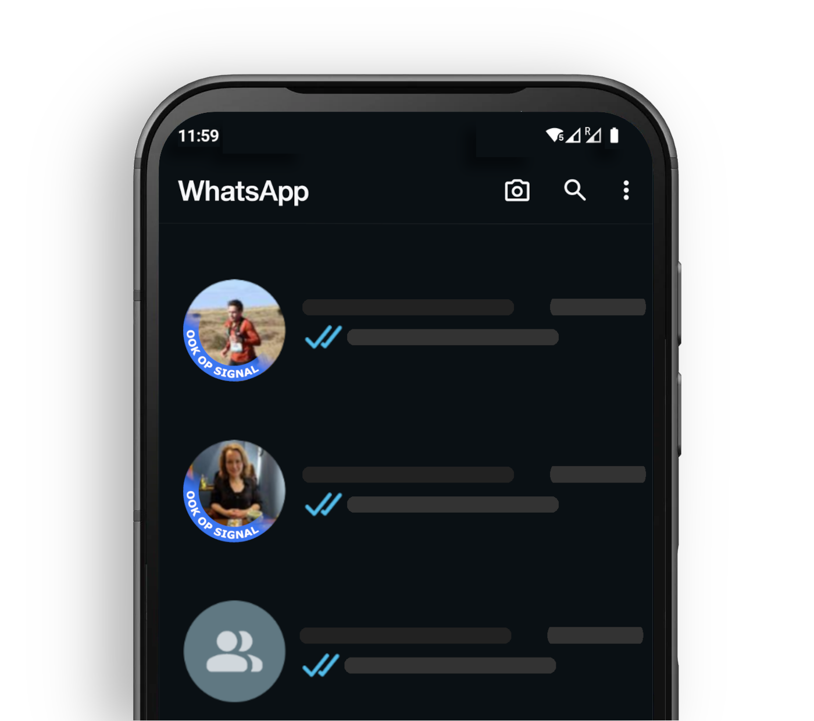
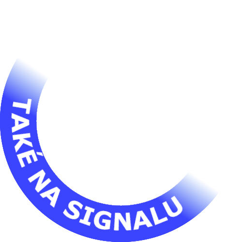
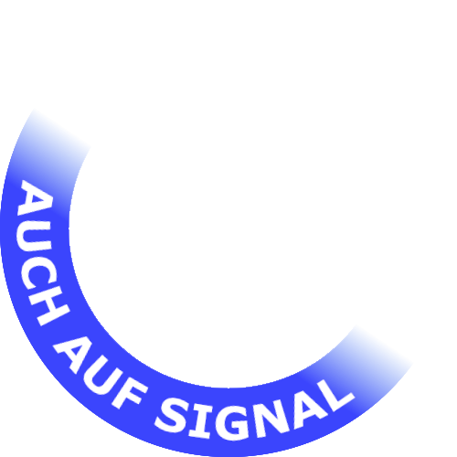
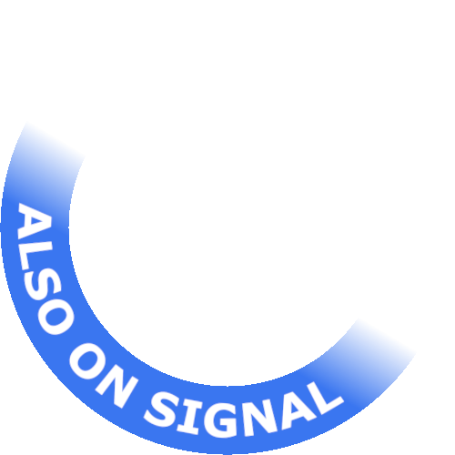
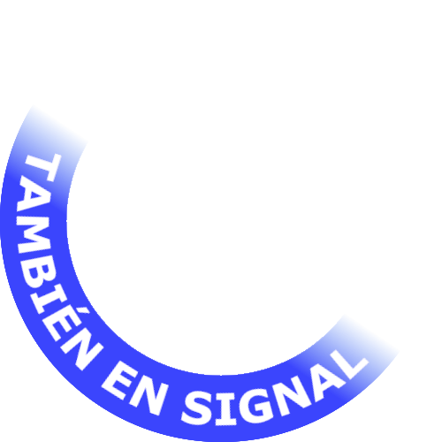
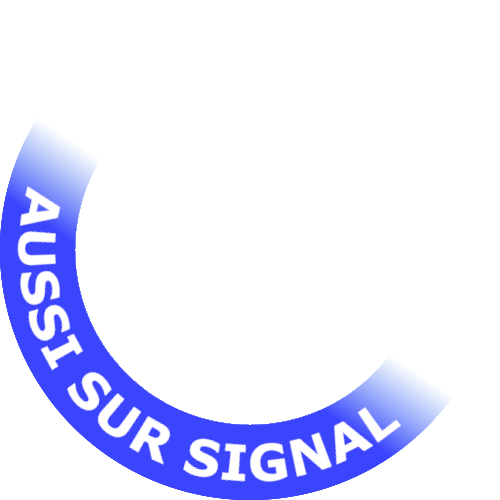
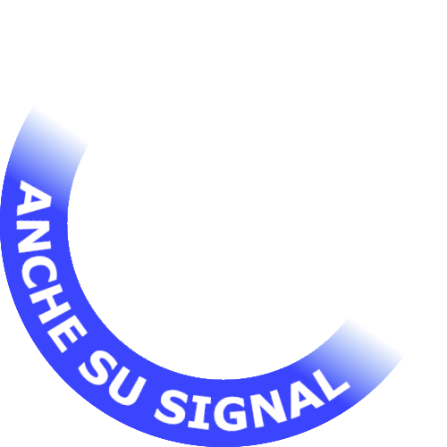
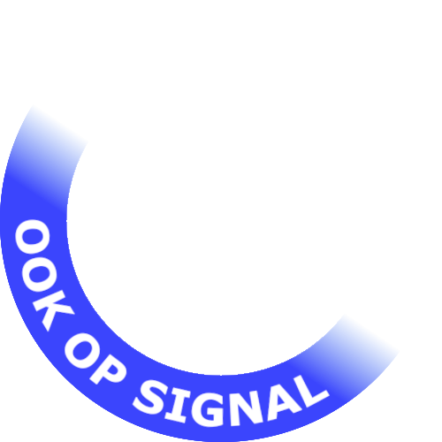
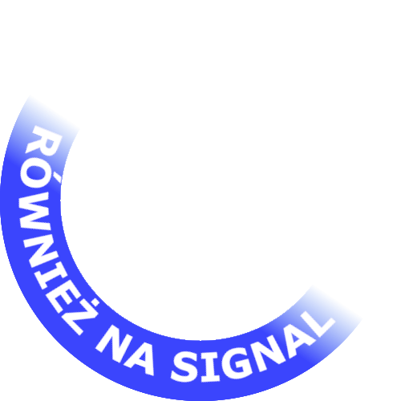
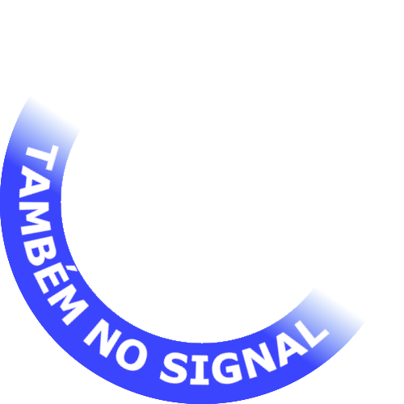

De overstap van WhatsApp naar Signal lijkt simpel, maar in de praktijk blijkt het vaak lastig. Waarom overstappen als niemand in je netwerk Signal gebruikt? En waarom zou je Signal gebruiken als niemand overstapt? Dit is een probleem dat we samen moeten oplossen.
Om dit probleem aan te pakken, heb ik een tool ontwikkeld waarmee je een OokopSignal-badge aan je profielfoto kunt toevoegen. Deze badge laat zien dat je ook op Signal bereikbaar bent, waardoor het voor je vrienden en familie makkelijker wordt om de overstap te maken.
Doe ook mee! Samen kunnen we de overstap eenvoudiger maken! 🚀
Meer weten waarom je zou overstappen naar Signal? Lees hier meer.

De foto wordt uitsluitend verwerkt in je browser en wordt dus nergens opgeslagen.

Čeština
Deutsch
English
Español
Français
Italiano
Nederlands
Polski
PortuguêsLet op: Als de download niet werkt in LinkedIn-app, open deze pagina dan in een browser.